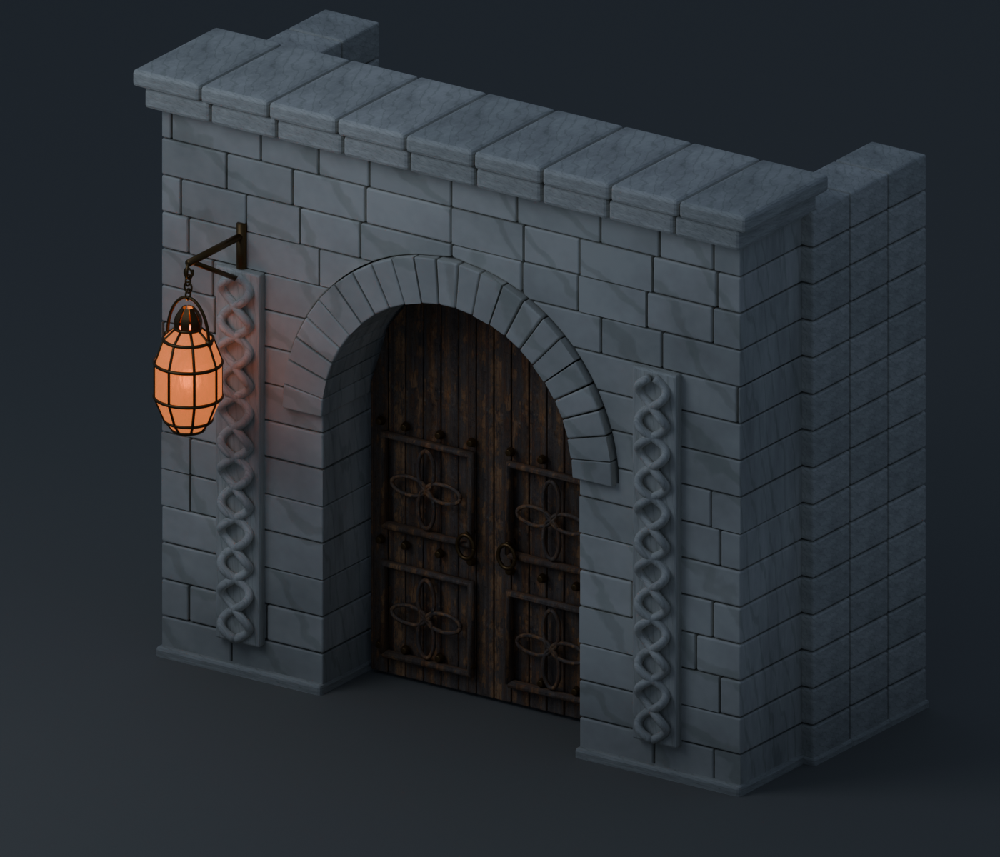
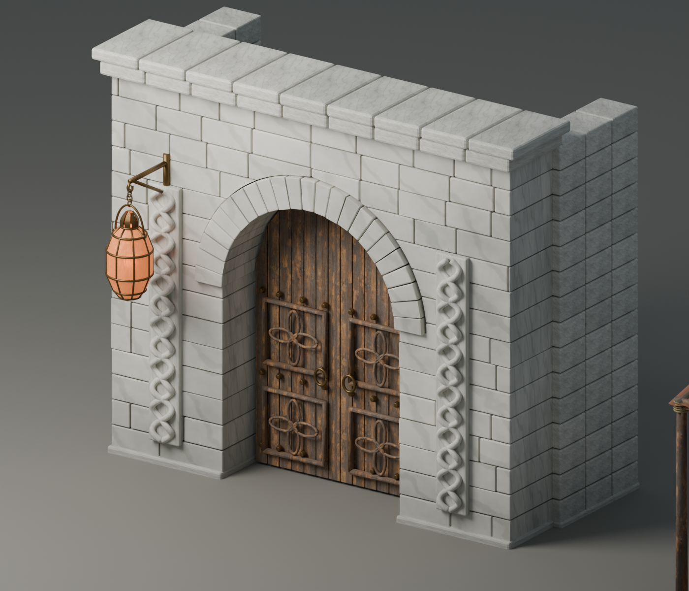
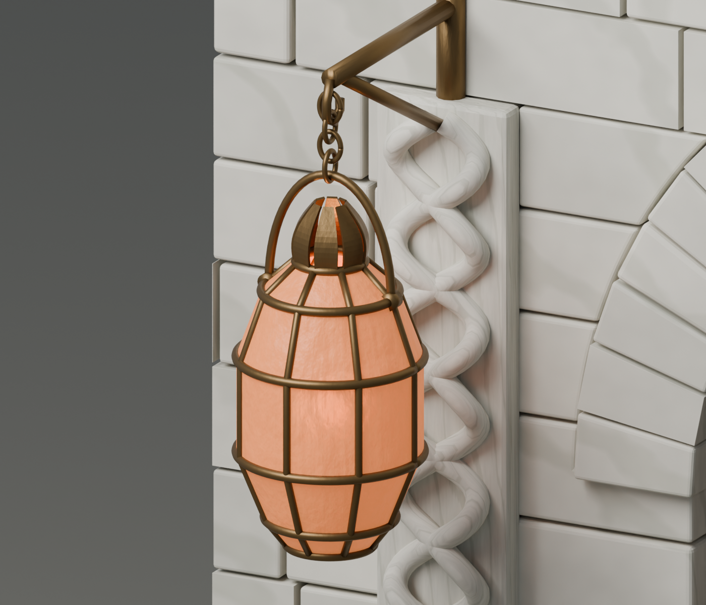
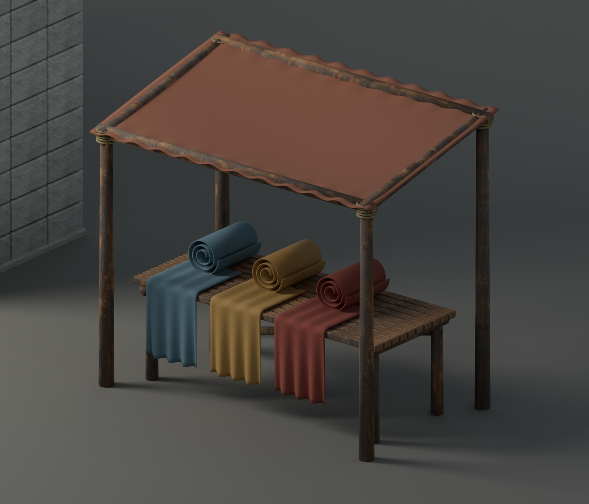

The capital, piece by piece
Construction studies for Anathol’s white-marble streets and Thousand Lights Market. These are built assets under review; Anathol is not yet playable.
Return to the playable world →Marble and lamplight



A textile trader’s working space

The marble capital and lantern market follow Amra’s lore. These particular carvings, lanterns and stalls are local design proposals. Sources and asset notes.